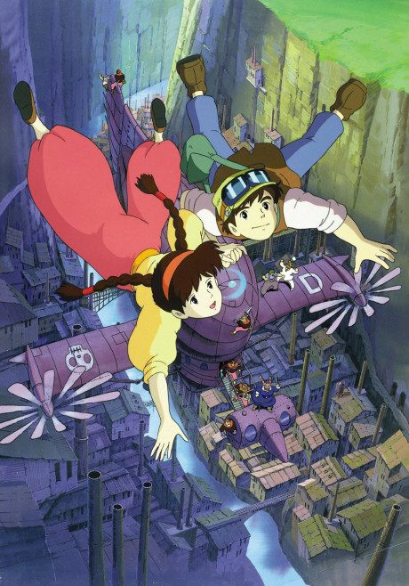

AnimeCastle in the Sky
天空の城ラピュタ
An original anime, so there's no book to continue with.
8.0AniList
—Animeter
1 epMovie
Is there a manga to continue?
StatusOriginal
An anime original, so there is no manga to pick up from.
Sources: AniList, MyAnimeList